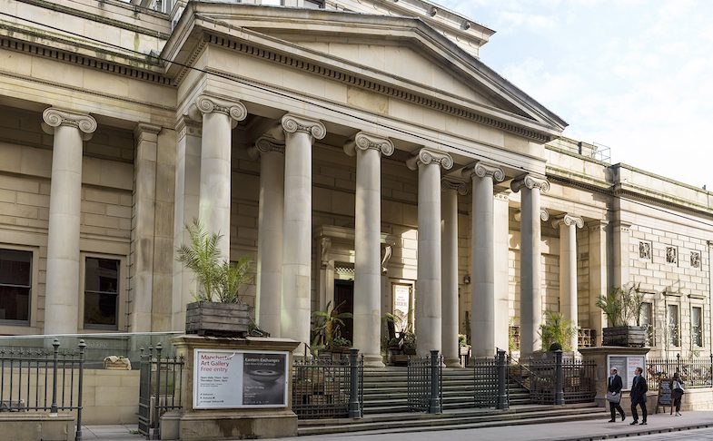

Manchester Art Gallery, formerly Manchester City Art Gallery, is a publicly owned art museum on Mosley Street in Manchester city centre. The main gallery premises were built for a learned society in 1823 and today its collection occupies three connected buildings, two of which were designed by Sir Charles Barry. Both Barry's buildings are listed. The building that links them was designed by Hopkins Architects following an architectural design competition managed by RIBA Competitions. It opened in 2002 following a major renovation and expansion project undertaken by the art gallery.Manchester Art Gallery is free to enter and open seven days a week. It houses many works of local and international significance and has a collection of more than 25,000 objects. More than half a million people visited the museum in the period of a year, according to figures released in April 2014.
Manchester art gallery